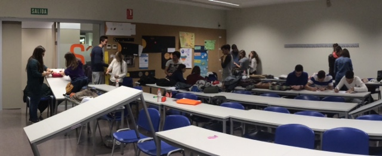
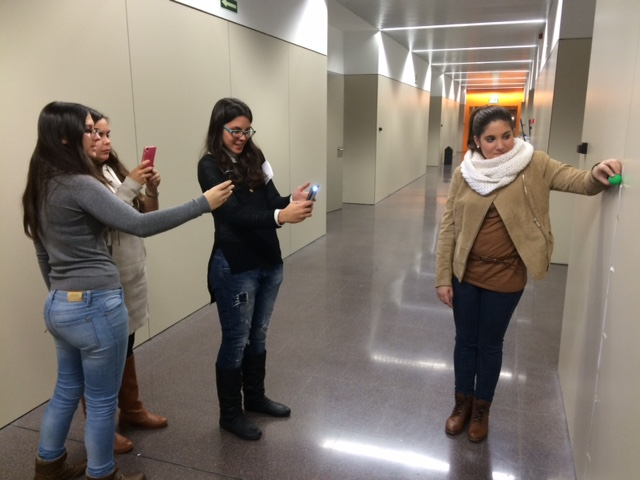
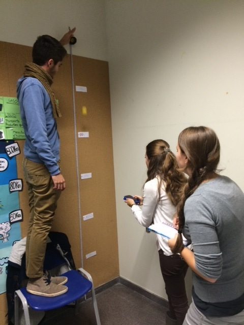
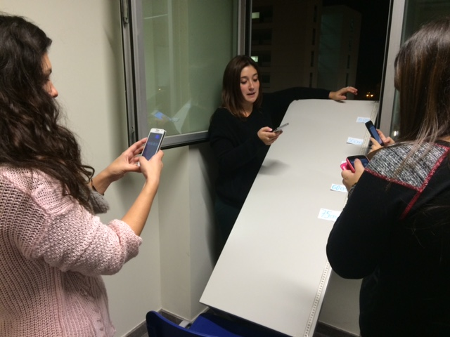
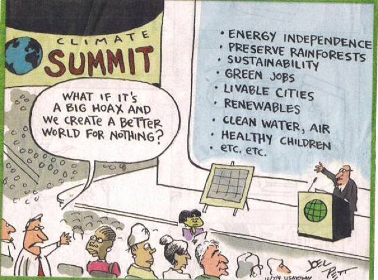
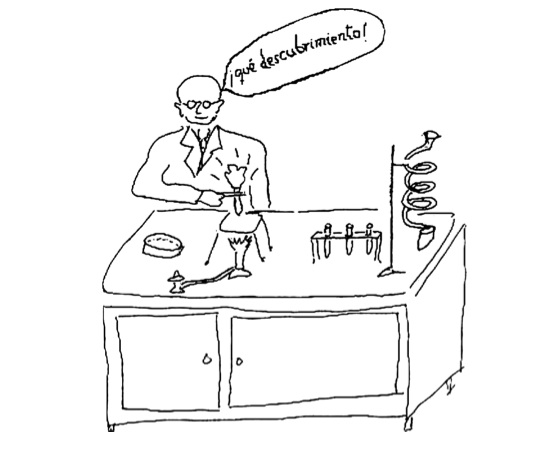

Antecedents: primeres idees sobre l'Univers
L'astronomia i les seues aplicacions
Del sistema geocèntric a l'heliocèntric
La gravitació universal. La síntesis newtoniana
Imatge actual de l'Univers
Satèl·lits artificials i les seues aplicacions
Les amenaces que rep la nau espacial Terra
Conceptes qualitatius
Aprofundiment dels conceptes de treball i energia
Llei de conservació i transformació de l’energia
Concepció actual de la naturalesa del calor: una transferència d’energia
La degradació de l’energia
De les màquines manuals a les màquines tèrmiques i elèctriques
Problemes associats a l’ús de l’energia i possibles solucions





Notes finals de la primera part de l'assignatura (versió Gener, actualitzades a l'Aula Virtual)
Notes de l'examen (Gener) i notes de classe (prèvies a la revisió)
Índex resum de la primera part de l'assignatura.
Text sobre Galileu
Vídeos sobre Galileu (l'enllaç va a Youtube, trobareu les pel·lícules de Joseph Losey o Liliana Cavani, o una basada en el guió de Bertolt Brecht)
Pel·lícula Creation, sobre la vida de Darwin i el seu treball
Apunts sobre Energia i treball.
Teoria atomicomolecular de la matèria: segles XX i XXI, física de partícules.
Tema 3: Teoria atomicomolecular de la matèria.
Caiguda lliure
Comproveu la conservació de l'energia en l'experiència de la caiguda lliure d'un objecte des d'una certa altura.
Pla inclinat: tobogan
Comproveu si es conserva l'energia llençant una bola per un tobogan o una rampa.
Feu la pràctica (dalt) sobre la conservació de l'energia.
Comunicació de resultats Dimarts 25 de Novembre.
Memòria o presentació abans del 15 de Desembre.
Feu una estimació del consum elèctric a la vostra casa.
Feu una representació a escala del sistema solar a partir de les següents dades,
en les quals D és la distància al Sol en milions de km, Φ
el diàmetre del planeta en km i el diàmetre del Sol és 1.392.000 km.

Per a Dimarts 13 d'Octubre.
Observeu diàriament la Lluna durant 28 dies i poseu en un quadre la posició aproximada (est-sud-oest),
l'hora i la forma de la Lluna.
Per a Dijous 16 d'Octubre.
Observeu el cel nocturn i poseu en comú les observacions realitzades. Anoteu l'hora en què s'ha realitzat
l'observació i dibuixeu un "mapa" celeste (planisferi) amb indicació mitjançant punts dels objectes
més lluminosos.
Per a Dimarts 7 d'Octubre.
Identifiqueu quines visions deformades de la ciència transmet aquesta representació del treball científic:

Una breu història de gairebé tot de Bill Bryson.
Por amor a la física, de Walter Lewin.